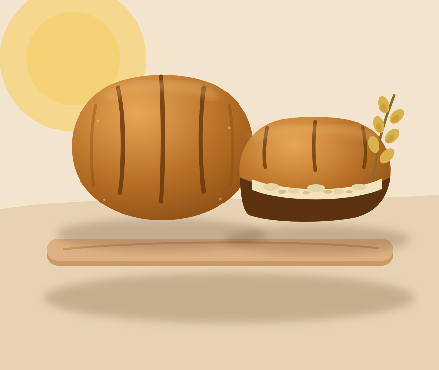

A small bakery with room to grow
Butter Days is a small team, a pair of ovens and one well-loved sourdough starter, baking fresh each morning in Kelburn. Here is how we work and what matters to us.
Since 2019
It started with sourdough and a clear purpose
In 2017, Ria began learning to bake sourdough and named her starter Doris. Two years later she opened Butter Days with a single deck oven and a commitment to make everything by hand.
Today a close-knit team works across two ovens, baking fresh in small batches throughout the morning. Our pastry case reflects the seasons, and our bread is made with the same carefully tended starter.

A day at Butter Days
A morning in the bakery
-
Feed Doris
Before the first coffee, our starter is refreshed with flour and water to prepare it for the day’s dough.
-
Laminate by hand
Butter and dough are folded by hand, resting between folds for a light, crisp finish.
-
Bake & proof
Pastries, bread and tarts are shaped, proofed and baked in stages throughout the morning.
-
Open the doors
We open at 7am on weekdays, ready to welcome our neighbours for coffee and the first warm pastries.
What we believe
Four rules we actually keep
Real butter or no butter
We use quality Westgold butter for its flavour and performance in our hand-laminated pastry.
Stone-milled, mostly organic flour
Stone-milled flour brings depth and texture to our sourdough and many of our daily bakes.
Small batches, all morning
Small batches throughout the morning keep our pastry case fresh. Almond croissants are the exception, baked a second time for their signature finish.
Closed Mondays
We close on Mondays to give our team time to rest and return ready for the week.
The six people
Who you’ll meet at the counter
Ria · Head baker and founder
Ria opened Butter Days in 2019 and continues to lead our daily baking and pastry work.
Toe · Pastry and tarts
Toe develops the pastries and tarts that fill our case throughout the seasons.
Marama · Bread
Marama cares for our sourdough starter and bakes the loaves that leave the oven each morning.
Sam, Ada & Luca · The counter
Our front-of-house team serves coffee, shares the day’s menu and welcomes every guest.